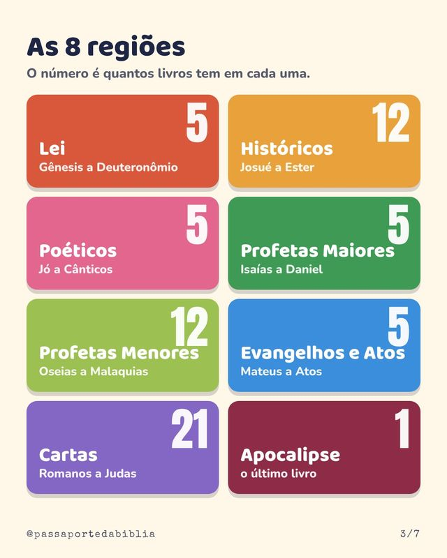
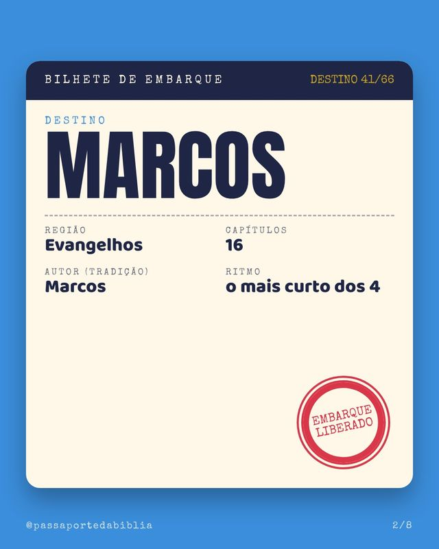
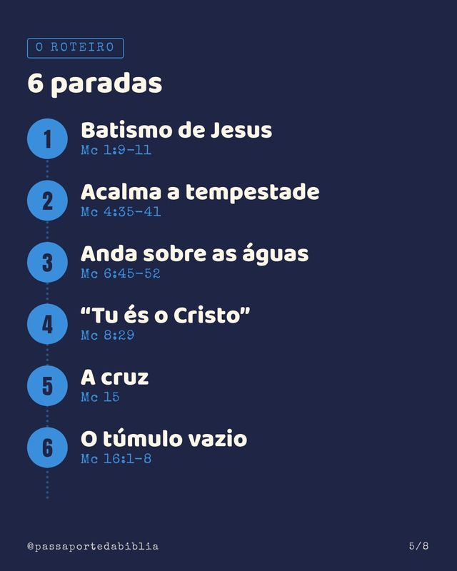
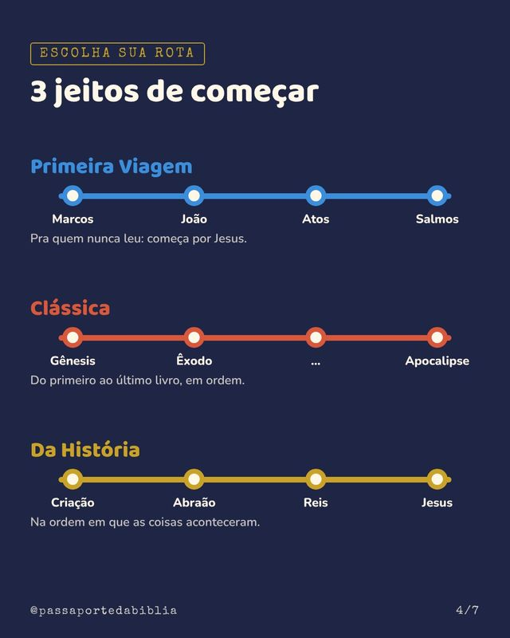
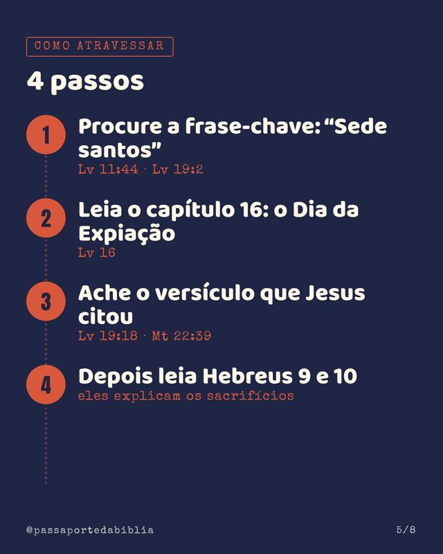
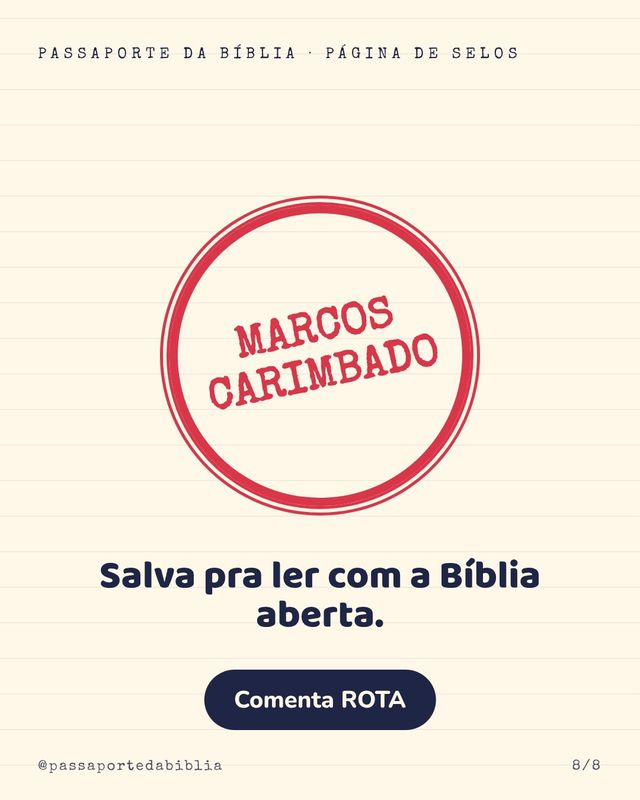

<title>Passaporte da Bíblia</title>
<meta name="claude:viewport-fit-sides" content="cover">
<meta name="description" content="Cada livro da Bíblia explicado em 1 página colorida. Leia, entenda e carimbe. Edição evangélica (66) ou católica (73).">
<link rel="preconnect" href="https://fonts.googleapis.com"><link rel="preconnect" href="https://fonts.gstatic.com" crossorigin>
<link href="https://fonts.googleapis.com/css2?family=Anton&family=Baloo+2:wght@600;800&family=Nunito:wght@500;700;800;900&family=Special+Elite&display=swap" rel="stylesheet">
<!-- Página de venda do Passaporte da Bíblia (conta Zuleide, 18/11/2026). Copy: pesquisa/biblia-estrategia.md, seção H.
     Trocar antes de publicar: {{PRECO}}, {{CHECKOUT_EVANGELICA}}, {{CHECKOUT_CATOLICA}}, {{WHATSAPP}}, {{EMAIL}}, {{CNPJ}}.
     Referências: produto/TEMPLATE.md (BibleProject, Dwell, Antofágica). -->
<style>
/* Layout: abre como cinema (gravura de Doré em cor de cinema, igual ao canal) e vira papel de passaporte (creme, selos, bilhetes) ao descer.
   Visual único e deliberado: não muda com o tema do aparelho. */
:root{
  --petroleo:#0B1C22; --noite:#1F2544; --noite-2:#161b36; --creme:#FFF7E8; --papel:#F6EBD3; --ouro:#C9A227; --ambar:#F2B45C;
  --amarelo:#FFD23F; --ciano:#5EE6EB; --carimbo:#D7263D; --tinta:#1F2544; --tinta-2:#4a5078; --linha:rgba(31,37,68,.14);
  --r-lei:#D9573B; --r-hist:#E9A23B; --r-poe:#E2668E; --r-pma:#3F9A55; --r-pme:#9CC152; --r-ev:#3B8EDB; --r-cartas:#8466C4; --r-ap:#8E2C48;
  --f-display:'Anton',Impact,'Arial Narrow',sans-serif; --f-titulo:'Baloo 2','Trebuchet MS',sans-serif; --f-texto:'Nunito',system-ui,sans-serif; --f-carimbo:'Special Elite','Courier New',monospace;
  color-scheme:light;
}
*{box-sizing:border-box}
html{scroll-behavior:smooth}
body{margin:0;background:var(--creme);color:var(--tinta);font:500 18px/1.6 var(--f-texto)}
.wrap{max-width:1120px;margin:0 auto;padding-left:max(20px,env(safe-area-inset-left,0px));padding-right:max(20px,env(safe-area-inset-right,0px))}
h1,h2,h3{font-family:var(--f-titulo);font-weight:800;line-height:1.05;margin:0;text-wrap:balance}
h2{font-size:clamp(34px,5vw,56px)}
h3{font-size:26px}
p{margin:0}
.rotulo{display:inline-block;font:400 14px/1 var(--f-carimbo);letter-spacing:.22em;text-transform:uppercase;padding:8px 12px;border:1.5px solid currentColor;border-radius:4px}
.btn{display:inline-flex;align-items:center;justify-content:center;gap:10px;font:900 19px/1 var(--f-texto);letter-spacing:.02em;text-decoration:none;
  background:var(--amarelo);color:var(--petroleo);padding:20px 30px;border-radius:999px;box-shadow:0 6px 0 #b8901a;transition:transform .15s,box-shadow .15s}
.btn:hover{transform:translateY(-2px);box-shadow:0 8px 0 #b8901a}
.btn:active{transform:translateY(3px);box-shadow:0 3px 0 #b8901a}
.btn:focus-visible,a:focus-visible,summary:focus-visible{outline:3px solid var(--ciano);outline-offset:3px}
.btn.escuro{background:var(--noite);color:var(--creme);box-shadow:0 6px 0 #0c1026}
.letrinha{font-size:15px;opacity:.8}
section{padding-block:clamp(64px,9vw,112px)}

/* ---------- topo de cinema ---------- */
.hero{position:relative;background:var(--petroleo);color:var(--creme);overflow:hidden;padding-block:0}
.hero .fundo{position:absolute;inset:0;background:url(img/hero.jpg) 60% 40%/cover no-repeat}
.hero .fundo::after{content:"";position:absolute;inset:0;background:linear-gradient(90deg,rgba(6,14,18,.94) 0,rgba(6,14,18,.72) 45%,rgba(6,14,18,.15) 100%),linear-gradient(0deg,rgba(6,14,18,.85),transparent 40%)}
.hero .wrap{position:relative;display:grid;grid-template-columns:1.15fr .85fr;gap:40px;align-items:center;padding-block:56px 80px}
.marca{font:400 15px var(--f-carimbo);letter-spacing:.32em;color:rgba(255,240,205,.9);margin-bottom:46px;display:flex;align-items:center;gap:12px}
.marca i{width:34px;height:34px;border-radius:50%;border:2px solid var(--ouro);display:grid;place-items:center;font-style:normal;color:var(--ouro);font-size:16px}
.hero h1{font-family:var(--f-display);font-weight:400;text-transform:uppercase;font-size:clamp(52px,8.4vw,108px);line-height:.92;letter-spacing:.005em;text-shadow:0 6px 0 rgba(0,0,0,.6)}
.hero h1 b{color:var(--amarelo);font-weight:400}
.hero .sub{font-size:clamp(19px,2vw,22px);max-width:540px;margin-top:22px;color:#f3e6cc}
.hero .acao{display:flex;flex-wrap:wrap;gap:18px;align-items:center;margin-top:34px}
.selos{display:flex;flex-wrap:wrap;gap:10px 22px;margin-top:22px;font-size:15px;color:#e8dcc2}
.selos span::before{content:"✦ ";color:var(--ouro)}
.tag{display:inline-block;background:var(--ciano);color:var(--petroleo);font:400 22px var(--f-display);letter-spacing:.06em;padding:6px 14px;transform:rotate(-2deg);margin-bottom:18px}

/* passaporte desenhado em CSS */
.livreto{justify-self:center;position:relative;width:min(330px,80vw);aspect-ratio:5/7;transform:rotate(6deg);filter:drop-shadow(0 30px 40px rgba(0,0,0,.6))}
.capa-passaporte{position:absolute;inset:0;border-radius:10px 18px 18px 10px;background:
  radial-gradient(circle at 30% 20%,rgba(255,255,255,.08),transparent 50%),repeating-linear-gradient(45deg,rgba(255,255,255,.02) 0 2px,transparent 2px 6px),var(--noite);
  border-left:10px solid #151a33;display:flex;flex-direction:column;align-items:center;justify-content:space-between;padding:34px 22px;color:var(--ouro);text-align:center}
.capa-passaporte .t1{font:400 14px var(--f-carimbo);letter-spacing:.3em}
.capa-passaporte .t2{font:800 34px/1 var(--f-titulo);letter-spacing:.02em}
.brasao{width:120px;height:120px;border:3px solid var(--ouro);border-radius:50%;display:grid;place-items:center;position:relative}
.brasao::before{content:"";position:absolute;inset:10px;border:1.5px dashed var(--ouro);border-radius:50%}
.brasao svg{width:62px;height:62px}
.capa-passaporte .t3{font:400 13px var(--f-carimbo);letter-spacing:.2em;opacity:.85}
.carimbo-solto{position:absolute;right:-34px;bottom:-20px;width:132px;height:132px;border:6px double var(--carimbo);border-radius:50%;color:var(--carimbo);
  display:grid;place-items:center;text-align:center;font:400 15px/1.1 var(--f-carimbo);transform:rotate(-18deg);background:rgba(255,247,232,.92)}

/* ---------- problema ---------- */
.problema{background:var(--noite-2);color:var(--creme);position:relative;overflow:hidden}
.problema .wrap{display:grid;grid-template-columns:1fr 1fr;gap:56px;align-items:center}
.problema figure{margin:0;border-radius:6px;overflow:hidden;aspect-ratio:16/11;max-width:100%;background:url(img/problema.jpg) center/cover}
.problema h2{color:var(--creme)}
.problema .txt{display:flex;flex-direction:column;gap:18px;font-size:19px;color:#dfe2f2}
.problema .fala{font:800 26px/1.25 var(--f-titulo);color:var(--ambar)}
.problema strong{color:var(--amarelo)}

/* ---------- mecanismo: bilhete com 3 etapas ---------- */
.virada{background:var(--creme)}
.virada .cab{max-width:760px;display:flex;flex-direction:column;gap:18px;margin-bottom:46px}
.etapas{display:grid;grid-template-columns:repeat(3,1fr);gap:0;background:#fff;border-radius:22px;box-shadow:0 18px 40px rgba(31,37,68,.12);overflow:hidden}
.etapa{padding:34px 30px 38px;display:flex;flex-direction:column;gap:12px;position:relative;min-width:0}
.etapa + .etapa{border-left:3px dashed var(--linha)}
.etapa .n{font:400 64px/1 var(--f-display);color:var(--ouro)}
.etapa:nth-child(1) .n{color:var(--r-ev)} .etapa:nth-child(2) .n{color:var(--r-lei)} .etapa:nth-child(3) .n{color:var(--carimbo)}
.etapa p{color:var(--tinta-2)}

/* ---------- benefícios em faixas de região ---------- */
.ganhos{background:var(--papel)}
.ganhos .lista{display:grid;grid-template-columns:repeat(3,1fr);gap:24px;margin-top:40px}
.ganho{border-top:10px solid;padding-top:20px;display:flex;flex-direction:column;gap:10px}
.ganho:nth-child(1){border-color:var(--r-ev)} .ganho:nth-child(2){border-color:var(--r-hist)} .ganho:nth-child(3){border-color:var(--r-pma)}
.ganho p{color:var(--tinta-2)}

/* ---------- por dentro (galeria) ---------- */
.dentro{background:var(--noite);color:var(--creme)}
.dentro .cab{display:flex;justify-content:space-between;align-items:end;gap:24px;flex-wrap:wrap}
.dentro .cab p{max-width:460px;color:#cfd3ea}
.galeria{display:grid;grid-template-columns:repeat(3,1fr);gap:20px;margin-top:40px}
.galeria figure{margin:0;display:flex;flex-direction:column;gap:10px;min-width:0}
.galeria img{width:100%;aspect-ratio:4/5;object-fit:cover;border-radius:12px;display:block;box-shadow:0 14px 30px rgba(0,0,0,.35);transition:transform .25s}
.galeria figure:nth-child(odd) img{transform:rotate(-1.2deg)} .galeria figure:nth-child(even) img{transform:rotate(1.2deg)}
.galeria figure:hover img{transform:rotate(0) scale(1.02)}
.galeria figcaption{font:400 14px var(--f-carimbo);letter-spacing:.12em;color:var(--ambar)}
.aviso{margin-top:26px;font-size:15px;color:#aeb3d1}

/* ---------- o que vem dentro: ficha de bagagem ---------- */
.stack{background:var(--creme)}
.ficha{display:grid;grid-template-columns:1.2fr .8fr;gap:0;margin-top:40px;border:3px solid var(--tinta);border-radius:18px;overflow:hidden;background:#fff}
.ficha > div{padding:34px 34px 38px;min-width:0}
.ficha .bonus{background:var(--papel);border-left:3px dashed var(--tinta)}
.ficha h3{display:flex;align-items:center;gap:12px;margin-bottom:18px}
.ficha ul{list-style:none;margin:0;padding:0;display:flex;flex-direction:column;gap:14px}
.ficha li{display:grid;grid-template-columns:22px 1fr;gap:12px}
.ficha li::before{content:"";width:18px;height:18px;margin-top:5px;border:2.5px solid var(--carimbo);border-radius:50%}
.ficha li b{font-weight:900}
.ficha .pg{font:400 13px var(--f-carimbo);letter-spacing:.14em;color:var(--tinta-2)}

/* ---------- edições ---------- */
.edicoes{background:var(--papel)}
.duas{display:grid;grid-template-columns:1fr 1fr;gap:26px;margin-top:40px}
.edicao{background:var(--noite);color:var(--creme);border-radius:22px;padding:34px;display:flex;flex-direction:column;gap:16px;position:relative;overflow:hidden}
.edicao.cat{background:#2b1f12}
.edicao .num{font:400 120px/0.9 var(--f-display);color:var(--ouro)}
.edicao ul{margin:0;padding-left:20px;color:#dfe2f2;display:flex;flex-direction:column;gap:6px}
.edicao .valor-ed{font:400 46px/1 var(--f-display);color:var(--amarelo);margin-top:auto}
.edicao .btn{align-self:flex-start}
.nota{text-align:center;margin-top:24px;color:var(--tinta-2)}

/* ---------- para quem ---------- */
.quem .duas .lado{border-radius:22px;padding:34px;display:flex;flex-direction:column;gap:14px}
.quem .sim{background:#e6f1e2}
.quem .nao{background:#f6e2e2}
.quem ul{margin:0;padding:0;list-style:none;display:flex;flex-direction:column;gap:10px}
.quem .sim li::before{content:"✓  ";font-weight:900;color:var(--r-pma)}
.quem .nao li::before{content:"✕  ";font-weight:900;color:var(--carimbo)}

/* ---------- preço + garantias ---------- */
.preco{background:var(--petroleo);color:var(--creme);text-align:center}
.preco .wrap{display:flex;flex-direction:column;align-items:center;gap:20px}
.preco .valor{font:400 clamp(80px,14vw,150px)/.9 var(--f-display);color:var(--amarelo)}
.preco p{max-width:640px;color:#d7e1e3}
.garantias{display:grid;grid-template-columns:1fr 1fr;gap:22px;margin-top:30px;text-align:left;width:100%}
.garantia{border:2px solid rgba(255,247,232,.25);border-radius:18px;padding:28px;display:grid;grid-template-columns:96px 1fr;gap:20px;align-items:center}
.garantia .sl{width:96px;height:96px;border:5px double var(--ambar);border-radius:50%;display:grid;place-items:center;text-align:center;font:400 13px/1.1 var(--f-carimbo);color:var(--ambar);transform:rotate(-10deg)}
.garantia h3{font-size:22px;margin-bottom:6px}
.garantia p{font-size:16px}
.honesto{font-style:italic;color:#b9c9cc;margin-top:8px}

/* ---------- FAQ ---------- */
.faq .itens{margin-top:36px;border-top:2px solid var(--tinta)}
.faq details{border-bottom:1.5px solid var(--linha)}
.faq summary{cursor:pointer;list-style:none;padding:22px 44px 22px 0;font:800 21px/1.3 var(--f-titulo);position:relative}
.faq summary::-webkit-details-marker{display:none}
.faq summary::after{content:"+";position:absolute;right:6px;top:16px;font:400 30px var(--f-display);color:var(--carimbo)}
.faq details[open] summary::after{content:"–"}
.faq details p{padding:0 0 22px;color:var(--tinta-2);max-width:760px}

/* ---------- fim ---------- */
.fim{background:var(--noite);color:var(--creme);text-align:center}
.fim .wrap{display:flex;flex-direction:column;align-items:center;gap:22px}
.fim p{max-width:640px;color:#cfd3ea}
.fim .selo-grande{width:150px;height:150px;border:8px double var(--carimbo);border-radius:50%;display:grid;place-items:center;color:var(--carimbo);font:400 18px/1.1 var(--f-carimbo);transform:rotate(-12deg);background:var(--creme)}
footer{background:#0f1330;color:#9aa0c3;font-size:14px}
footer .wrap{padding-block:30px;display:flex;flex-wrap:wrap;gap:10px 26px;justify-content:space-between}

/* ---------- celular ---------- */
@media (max-width:860px){
  .hero .fundo{background-image:url(img/hero-celular.jpg);background-position:center}
  .hero .fundo::after{background:linear-gradient(0deg,rgba(6,14,18,.96) 0,rgba(6,14,18,.75) 55%,rgba(6,14,18,.35) 100%)}
  .hero .wrap,.problema .wrap,.ficha,.duas,.garantias{grid-template-columns:1fr}
  .hero .wrap{padding-block:34px 60px}
  .livreto{width:min(240px,64vw);order:-1;margin-bottom:6px}
  .marca{margin-bottom:24px}
  .etapas,.ganhos .lista{grid-template-columns:1fr}
  .etapa + .etapa{border-left:0;border-top:3px dashed var(--linha)}
  .galeria{grid-template-columns:1fr 1fr;gap:14px}
  .ficha .bonus{border-left:0;border-top:3px dashed var(--tinta)}
  .garantia{grid-template-columns:72px 1fr}
  .garantia .sl{width:72px;height:72px;font-size:11px}
  .carimbo-solto{right:-18px;width:100px;height:100px;font-size:12px}
  .btn{width:100%}
}
@media (prefers-reduced-motion:reduce){html{scroll-behavior:auto}.btn,.galeria img{transition:none}}
</style>

<header class="hero">
  <div class="fundo" aria-hidden="true"></div>
  <div class="wrap">
    <div>
      <div class="marca"><i>✈</i>PASSAPORTE DA BÍBLIA</div>
      <span class="tag">BÍBLIA EXPLICADA</span>
      <h1>Cada livro da Bíblia em <b>1 página</b></h1>
      <p class="sub">O Passaporte da Bíblia te mostra por onde começar, explica cada livro sem complicação e te deixa carimbar cada um que você ler. Sem data, sem culpa, no seu ritmo.</p>
      <div class="acao"><a class="btn" href="#edicoes">Quero meu Passaporte</a></div>
      <div class="selos"><span>É um PDF: chega na hora no e-mail e no WhatsApp</span><span>Evangélica (66) ou católica (73)</span><span>15 dias pra devolver</span></div>
    </div>
    <div class="livreto" aria-label="Capa do Passaporte da Bíblia">
      <div class="capa-passaporte">
        <span class="t1">REPÚBLICA DA PALAVRA</span>
        <div class="brasao"><svg viewBox="0 0 64 64" fill="none" stroke="#C9A227" stroke-width="3" aria-hidden="true"><path d="M8 18c8-4 16-4 24 2 8-6 16-6 24-2v32c-8-4-16-4-24 2-8-6-16-6-24-2z"/><path d="M32 20v32"/><path d="M32 6v6M26 9h12" stroke-linecap="round"/></svg></div>
        <span class="t2">PASSAPORTE<br>DA BÍBLIA</span>
        <span class="t3">VIAJANTE: ____________</span>
      </div>
      <div class="carimbo-solto">MARCOS<br>CARIMBADO</div>
    </div>
  </div>
</header>

<section class="problema">
  <div class="wrap">
    <figure aria-hidden="true"></figure>
    <div class="txt">
      <span class="rotulo" style="color:var(--ambar);align-self:flex-start">O problema</span>
      <h2>Você abre a Bíblia com vontade… e fecha sem entender.</h2>
      <p>Começa em Gênesis cheio de fé. Chega em Levítico e trava. Tenta de novo, cai numa lista de nomes e o sono bate.</p>
      <p class="fala">“Todo mundo lê, menos eu.”</p>
      <p>Se isso já aconteceu com você, respira: <strong>você não é fraco na fé.</strong> Você só estava viajando sem mapa. Ninguém entra num país novo sem saber onde fica nada. Com a Bíblia é igual.</p>
    </div>
  </div>
</section>

<section class="virada">
  <div class="wrap">
    <div class="cab">
      <span class="rotulo" style="color:var(--carimbo);align-self:flex-start">Como funciona</span>
      <h2>A Bíblia fica mais fácil quando você vê o mapa antes da viagem.</h2>
    </div>
    <div class="etapas">
      <div class="etapa"><span class="n">1</span><h3>Primeiro, o todo</h3><p>Um mapa com todos os livros em 8 regiões coloridas e a história inteira da Bíblia em 1 página.</p></div>
      <div class="etapa"><span class="n">2</span><h3>Depois, cada livro em 1 página</h3><p>Do que ele fala, quem aparece, as partes principais com a referência pra você conferir e uma dica pro trecho difícil.</p></div>
      <div class="etapa"><span class="n">3</span><h3>E você carimba</h3><p>Leu? Carimba. Cada selo é um passo. Passaporte não vence: atrasou, continua de onde parou.</p></div>
    </div>
  </div>
</section>

<section class="ganhos">
  <div class="wrap">
    <h2>O que muda na sua leitura</h2>
    <div class="lista">
      <div class="ganho"><h3>Entender o que lê</h3><p>Antes de abrir o livro você já sabe do que ele fala. A leitura faz sentido.</p></div>
      <div class="ganho"><h3>Saber por onde começar</h3><p>3 rotas prontas. A Primeira Viagem começa pelos Evangelhos, o caminho mais tranquilo pra quem está começando.</p></div>
      <div class="ganho"><h3>Chegar até o fim, sem culpa</h3><p>Sem calendário cobrando. Você vê o seu progresso nos selos e não larga.</p></div>
    </div>
  </div>
</section>

<section class="dentro">
  <div class="wrap">
    <div class="cab">
      <div><span class="rotulo" style="color:var(--ciano)">Por dentro</span><h2 style="margin-top:18px">Colorido, simples e com a referência.</h2></div>
      <p>É assim que o Passaporte conversa com você: mapa, bilhete de embarque, roteiro em paradas e o carimbo no fim de cada livro.</p>
    </div>
    <div class="galeria">
      <figure><figcaption>MAPA DAS 8 REGIÕES</figcaption></figure>
      <figure><figcaption>BILHETE DO LIVRO</figcaption></figure>
      <figure><figcaption>O ROTEIRO EM PARADAS</figcaption></figure>
      <figure><figcaption>3 ROTAS DE LEITURA</figcaption></figure>
      <figure><figcaption>KIT TRAVESSIA</figcaption></figure>
      <figure><figcaption>O SEU CARIMBO</figcaption></figure>
    </div>
    <p class="aviso">Prévia do estilo das páginas, tirada dos nossos conteúdos do Instagram @passaportedabiblia.</p>
  </div>
</section>

<section class="stack">
  <div class="wrap">
    <span class="rotulo" style="color:var(--carimbo)">Sua bagagem</span>
    <h2 style="margin-top:18px">Tudo o que vem no seu Passaporte</h2>
    <div class="ficha">
      <div>
        <h3>O Passaporte da Bíblia <span class="pg">≈ 82 PÁG. · 89 NA CATÓLICA</span></h3>
        <ul>
          <li><span><b>Mapa-Múndi da Bíblia:</b> todos os livros em regiões coloridas, numa página dupla</span></li>
          <li><span><b>A Grande História em 1 Página:</b> de Gênesis a Apocalipse em 6 capítulos</span></li>
          <li><span><b>Linha do Tempo da Viagem</b></span></li>
          <li><span><b>Os 7 Tipos de Terreno:</b> como ler história, poesia, profecia, cartas… cada um do seu jeito</span></li>
          <li><span><b>3 Rotas de leitura prontas</b> e as Regras do Viajante Sem Culpa</span></li>
          <li><span><b>66 Guias de Destino</b> (73 na católica): cada livro em 1 página</span></li>
          <li><span><b>Página de Selos, Níveis de Viajante e Certificado</b> “Volta ao Mundo da Bíblia”</span></li>
          <li><span><b>Diário de Bordo</b> pra imprimir quantas vezes quiser</span></li>
        </ul>
      </div>
      <div class="bonus">
        <h3>E você ainda leva</h3>
        <ul>
          <li><span><b>Mapa Grandão da Bíblia:</b> pôster pra pendurar na parede</span></li>
          <li><span><b>Kit Travessia:</b> Levítico, Números, genealogias, profetas e Apocalipse sem largar</span></li>
          <li><span><b>Cartela Sem Data:</b> todos os capítulos em quadradinhos pra pintar</span></li>
          <li><span><b>30 Versículos de Bolso:</b> papéis de parede pro celular</span></li>
        </ul>
      </div>
    </div>
  </div>
</section>

<section class="edicoes" id="edicoes">
  <div class="wrap">
    <span class="rotulo" style="color:var(--tinta)">Escolha sua edição</span>
    <h2 style="margin-top:18px">Cada um com a Bíblia que usa.</h2>
    <div class="duas">
      <div class="edicao">
        <span class="num">66</span><h3>Edição Evangélica</h3>
        <ul><li>66 livros</li><li>Ordem da Bíblia evangélica</li></ul>
        <span class="valor-ed">{{PRECO}}</span>
        <a class="btn" href="{{CHECKOUT_EVANGELICA}}" rel="noopener">Quero a evangélica</a>
      </div>
      <div class="edicao cat">
        <span class="num">73</span><h3>Edição Católica</h3>
        <ul><li>73 livros, com Tobias, Judite, 1 e 2 Macabeus, Sabedoria, Eclesiástico e Baruc</li><li>Ordem da Bíblia católica</li></ul>
        <span class="valor-ed">{{PRECO}}</span>
        <a class="btn" href="{{CHECKOUT_CATOLICA}}" rel="noopener">Quero a católica</a>
      </div>
    </div>
    <p class="nota">Mesmo cuidado, mesmo preço. Pagamento único pela Hubla: Pix ou cartão.</p>
  </div>
</section>

<section class="quem">
  <div class="wrap">
    <h2>É pra você?</h2>
    <div class="duas">
      <div class="lado sim"><h3>É pra você se</h3><ul>
        <li>quer ler a Bíblia e entender de verdade;</li><li>não sabe por onde começar;</li><li>já largou um plano de leitura;</li>
        <li>gosta de aprender vendo: cores, mapas, desenhos;</li><li>quer explicar a Bíblia pros filhos ou pra célula.</li></ul></div>
      <div class="lado nao"><h3>Não é pra você se</h3><ul>
        <li>procura curso de grego, hebraico ou teologia avançada;</li>
        <li>quer um livro físico. O Passaporte é um PDF, que você imprime em casa ou na gráfica, se quiser.</li></ul></div>
    </div>
  </div>
</section>

<section class="preco">
  <div class="wrap">
    <span class="rotulo" style="color:var(--ambar)">Quanto custa</span>
    <p>Uma Bíblia impressa com mapas mentais custa a partir de R$ 74,93. São ótimas opções. O Passaporte é outra proposta: uma página por livro, pra você começar hoje.</p>
    <span class="valor">{{PRECO}}</span>
    <p><b>Pagamento único. Sem mensalidade.</b> O arquivo é seu, sem prazo de acesso.</p>
    <a class="btn" href="#edicoes">Quero meu Passaporte</a>
    <div class="garantias">
      <div class="garantia"><span class="sl">15 DIAS<br>GARANTIA</span><div><h3>Garantia do Carimbo</h3><p>Abriu, leu e achou que não ficou mais fácil de entender? Pede o dinheiro de volta em até 15 dias, sem explicar. Devolvemos 100%, e o Mapa Grandão fica com você.</p></div></div>
      <div class="garantia"><span class="sl">ENTREGA<br>NA HORA</span><div><h3>Garantia de Entrega</h3><p>Pagamento aprovado, o link chega no seu e-mail e no WhatsApp. Não chegou? Chama no WhatsApp {{WHATSAPP}} que uma pessoa resolve.</p></div></div>
    </div>
    <p class="honesto">A gente não promete que você vai ler a Bíblia inteira em X dias. Isso é entre você e Deus. A gente promete deixar a viagem mais clara.</p>
  </div>
</section>

<section class="faq">
  <div class="wrap">
    <h2>Perguntas de quem vai embarcar</h2>
    <div class="itens">
      <details><summary>É golpe? Vou pagar e não receber?</summary><p>Não. A compra é feita pela Hubla, uma plataforma que processa o pagamento e permite o reembolso. O arquivo chega na hora no seu e-mail e no WhatsApp. Se não chegar, chame no WhatsApp que uma pessoa resolve. E você tem 15 dias pra pedir o dinheiro de volta.</p></details>
      <details><summary>É livro físico ou PDF?</summary><p>É PDF (arquivo digital). Nada chega pelo correio. Você lê no celular, no tablet ou no computador e pode imprimir em casa ou na gráfica.</p></details>
      <details><summary>Funciona no celular?</summary><p>Sim. As letras são grandes e cada página tem 1 assunto só.</p></details>
      <details><summary>Sou católico. Serve pra mim?</summary><p>Serve. Escolha a Edição Católica: os 73 livros, na ordem da Bíblia católica, pelo mesmo preço.</p></details>
      <details><summary>Sou evangélico. Tem doutrina de outra igreja?</summary><p>A Edição Evangélica explica o que está escrito em cada livro, sempre com a referência. Não é material de denominação. Assuntos que dividem as igrejas não entram como verdade única.</p></details>
      <details><summary>O Passaporte substitui a Bíblia?</summary><p>Não, e nem quer. Ele é o mapa. A viagem é na sua Bíblia. Cada página foi feita pra você ler junto com ela.</p></details>
      <details><summary>Tem tanta coisa de graça no YouTube. Por que pagar?</summary><p>O conteúdo grátis é ótimo, e a gente mesmo faz vídeos grátis no canal. O Passaporte junta tudo num lugar só, em ordem, com mapa, rotas e selos, pra você não se perder pulando de vídeo em vídeo.</p></details>
      <details><summary>Não tenho tempo.</summary><p>Cada página se lê em poucos minutos, e o Passaporte não tem data. Um capítulo por dia também é viagem.</p></details>
      <details><summary>Já larguei vários planos. Vou largar esse também?</summary><p>Pode acontecer, e tudo bem. Por isso ele não tem data: você volta de onde parou, não do dia 1. Os selos mostram o quanto você já andou, e o Kit Travessia ajuda nos trechos onde mais gente desiste.</p></details>
      <details><summary>Posso imprimir pra minha célula ou turma de EBD?</summary><p>O Passaporte é para uso pessoal e da família. Para grupos, fale com a gente no WhatsApp.</p></details>
      <details><summary>E se eu não gostar?</summary><p>Pede o reembolso em até 15 dias, sem explicar nada.</p></details>
    </div>
  </div>
</section>

<section class="fim">
  <div class="wrap">
    <span class="selo-grande">PRIMEIRO<br>CARIMBO</span>
    <h2>Sua próxima leitura pode ser diferente.</h2>
    <p>Você pode continuar abrindo a Bíblia sem mapa e travando no mesmo lugar. Ou pode abrir hoje a página de Marcos, entender em poucos minutos e bater o seu primeiro carimbo.</p>
    <a class="btn" href="#edicoes">Quero meu Passaporte</a>
    <span class="letrinha">PDF · chega na hora · edição 66 ou 73 · 15 dias de garantia</span>
  </div>
</section>

<footer>
  <div class="wrap">
    <span>Passaporte da Bíblia · {{CNPJ}}</span>
    <span>Suporte: WhatsApp {{WHATSAPP}} · {{EMAIL}}</span>
    <span>Este produto não é afiliado ao Instagram, à Meta nem ao YouTube.</span>
  </div>
</footer>
